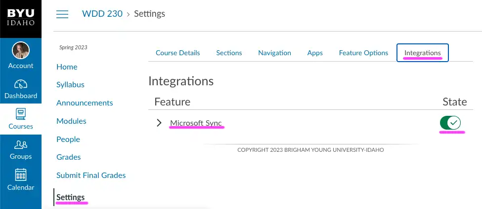
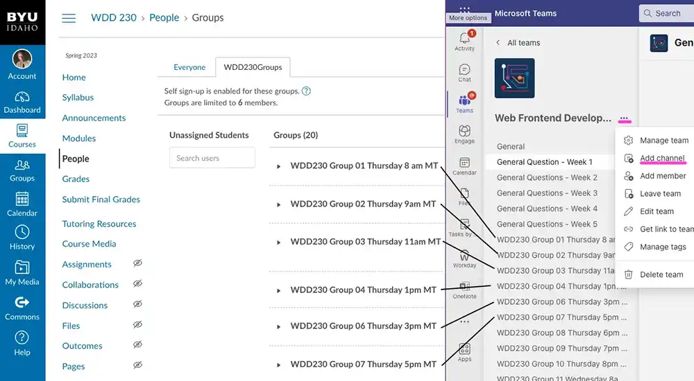
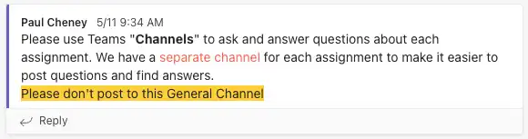
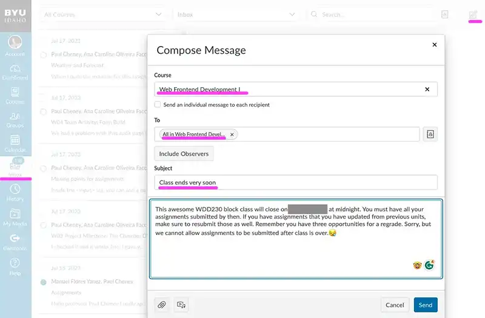

Student Outreach - Instructional Teams
Block begins on
Note: students do not have access to this page
Student outreach includes any work you do to build relationships with students, help clarify course content and assignment expectations, and encourage students to persist and do their best in the class. Though some additional instruction may be given by week or course, student outreach assignments generally fall into the following categories:
- Non-participating and Failing Students - In the initial weeks of a course, and at key times surrounding academic deadlines, you should reach out to students who are in danger of failing the course due to either low participation or failing grades. Message templates are provided in relevant weeks to assist you in reaching out to this student group.
- Missing Assignments - Starting in Week 02, you should reach out to any students in your class who are missing high-stakes assessments. Specific assessments will be identified in your course-specific outreach tasks.
- At-Risk Students - Some students may not be missing a high-stakes assessment, but they could use additional instructor help because they have received a lower grade on the assessment. Starting in Week 02, you will be asked to reach out to students who have scored low on a high-stakes assessment with an eye toward tutoring the student on specific concepts that could help them succeed. You may also allow students in this group to resubmit their assignment.
- Positive Outreach - Part of good student outreach is not just focusing on students who may need additional help, but building relationships and presence with those who are already succeeding. Besides reaching out to students who are missing or scoring low on key assessments, you will also be prompted to reach out to students who have scored highly, recognizing their good work.
- Additional Feedback on Course Content - Depending on the course, you may be asked to review certain assignments in order to give individual students or student groups additional feedback on key concepts so they can succeed in future assignments.
- Inspired Outreach - As an instructor in your course, pray for your students. You may receive additional inspiration and guidance on other ways you can positively influence and encourage the students in your class.
Best Practice: When communicating with students one-on-one, use MS Teams.
When
sending group outreach messages for assignment progress, use Canvas Gradebook.
Tracking Your Outreach
As you go about your weekly student outreach tasks, take care to not duplicate messages to students. Develop a method of tracking your outreach. Have ways to identify which students have received which messaging. Some instructors use the “Notes” column in the Gradebook to keep notes on their weekly communication with each student. Others use a Google spreadsheet or Excel. No matter what system you choose, find an approach that is both simple and effective for you.
This course has been designed to better enable instructors to support and mentor students. The inclusion of certified graders in this course is to help you have more time to reach out and provide one-to-one student support. To learn more about the tools available to you and how you can be effective in this role, please refer back to the Student Outreach principles in your OL 110 WWB Instructor Certification course.
Best Practice: Encourage students to meet with the course tutors and leverage search engines to accomplish difficult tasks.
Before Class Begins -
Send an Email
Modify the following message and then email it to all students using Canvas Inbox as well as posting it in the General MS Teams channel.
What a fantastic opportunity to work with students from around the world who share a common faith.
Class begins soon, and we must hit the ground running because we will cover the same essential learning outcomes in 7 weeks as in a 14-week semester.
Canvas should be open now if you want to get started early. No Pressure here.😃
You need to dedicate many hours per week to master these concepts. If you don't have that kind of time, you may want to take the class later when you can devote enough time to be successful.
You will be using VS Code to create all your assignments and then hosting them on GitHub. Both are tools used by professionals in the field.
We will be using MS Teams for communication and teamwork, so ensure you have it installed and ready to go.
It's going to be a fantastic and fast-paced ride for the next few weeks, so take your vitamin pills, and let's get started.
If you find yourself overwhelmed within the first week, you can drop the class using these instructions.
https://byui-help.screenstepslive.com/a/884683-how-to-withdraw-from-class
Bro/Sister Smith
Connect Teams and Canvas
Open Canvas, select settings, click the "Intergrations" tab and activate Microsoft Sync. Click the "Sync Now" button. W A I T.
Add Channels to Teams for Groupwork
Add a new channel in MS teams that exactly matches the names of the People>WDD230Groups in canvas (takes about 10 minutes)
Add channels for weekly discussions
Add a class channel for each week for class discussions "General Questions - Week 1" etc.

Post a message in Teams
Post a message NOT to use the General Channel. When we get over 100 people talking over 6 weeks, this becomes a mess.
Weekly Hints
If you have advice, tips, or hints for a specific week then post them to the General Questions for the related week. Hopefully this will encourage students to use these weekly channels for classwide communication.
WEEK 01 Outreach -
Slow Starting: Towards the end of the week, Send a modified version of the following message:
SUBJECT: Group Signup
One of your first assignments is to pick a team in Canvas and then in MS Teams, send a message t the rest of the group members. While many students have completed this task, there are still xx who have not. Please try and complete this assignment by the end of the day.
Bro/Sis Smith
No Submission for Course Home Page Development: Towards the end of the week, Send a modified version of the following message:
SUBJECT: Course Home Page
I noticed that you have not yet submitted your course home page on GitHub. While is not due yet, I would like to check in and see how you're doing with the assignment.
If you need a review from the previous class. there are four tutorials on this page that would be helpful.
https://byui-cse.github.io/wdd130-ww-course/week01/
- Editing Code: Visual Studio Code
- Testing: Web Developer Browser Extension
- Hosting Your Work: GitHub Account
- Uploading: Installing Git
Bro/Sis Smith
Non-participating Students: Towards the end of the week, reach out to students who have not yet engaged in the course (who have submitted no assignments). Inform them that this is a 7-week course, and remind them of the upcoming registration deadline. If they don't intend to complete the course, encourage them to drop so they can receive a full tuition refund. You can use or customize the following message template:
SUBJECT: Checking In
I noticed you haven't started the course yet. This course is only seven weeks long, and ends on . To succeed this term, it will be important for you to get started as soon as you can. Is there something that might be keeping you from getting started in this class? Please email me so we can work together to help you have a successful experience.
If you do not intend to participate in this course this term, I recommend that you drop the course before the registration deadline on . If you drop before then, you will receive a full-tuition refund. If you choose to drop the class after the registration deadline, you will not be able to receive a tuition refund unless you withdraw from all your courses this term.
I look forward to hearing from you and hope you have a successful semester!
Instructor-initiated Drops: According to According to BYU-Idaho's Instructor-initiated Drop Policy, you may request to drop any students who have not participated in your class by the start of Lesson 02. You initiate the drop process by submitting a form distributed by the Registrar's Office or contacting registration office. If you choose to drop students, please make sure you have send a couple of emails letting them know the consequences of not participating. It's hard to undrop them if they suddenly show an interest in class, but it is possible.
All Week: Keep checking MS Teams and your email and respond to any questions that have been posted.
Positive Outreach: On Friday, reach out to all students who have already completed the "W01 Activity: Course Home Page Development" early and congratulate them on a job well done.
I see that you have already completed the course home page for this week. Congratulations on completing the assignment early.
Report your week 1 outreach by midnight on
Best Practice: As you monitor late adds in your class, you may find it helpful to copy the names of the students you email in your initial welcome email and put them into a spreadsheet. This will help you spot changes in your students when you compare the initial outreach to your updated contact list.
WEEK 02 Outreach -
Late Work: On Monday, select the "W01 Activity: Course Home Page Development" in the gradebook and message students who have not submitted the assignment. Send a personalized version of the following email.
SUBJECT: Missing the Week 1 Course Home Page Development
I noticed you have not turned in the first assignment. Because the course is only seven weeks long, to succeed it will be important for you to be engaged in this course every week. Is there something that might be keeping you from engaging in this class? Please email me so we can work together to help you have a successful term.
If you do not intend to participate in this course this term, I recommend that you drop the course before the drop deadline on . Depending on your situation, you may be able to receive a prorated tuition refund. If you choose to drop the class after the drop deadline, you will receive a “W” grade on your transcript for this course.
I look forward to hearing from you and hope you have a successful experience!
Bro/Sister Smith
Group: On Monday, go to Canvas and review the People > WDD230Groups and identify all students in a group of one. Return to Canvas and using the Inbox > Compose a New Message send a message to this list of single group students.
SUBJECT: Selecting a new group
It appears that you are the only student who signed up for your group time.
In order to complete the group activities each week you will need to join another group.
Please go back to Canvas and add yourself to a different group and then go to Teams and introduce yourself to your new group. You will need to attend a group meeting this week so do this today if possible.
Bro/Sister Smith
All Week: Keep checking MS Teams and your email and respond to any questions that have been posted.
Positive Outreach: On Thursday, identify students who scored more than 16/20 on "W01 Project Introduction: Chamber Site Plan" and send them a message congratulating them on their work.
SUBJECT: Good work on your Site Plan
I see that you have done well on the Chamber Site Plan from last week. Keep up the good work. 😀
Bro/Sister Smith
Report your week 2 outreach by midnight on
WEEK 03 Outreach -
Late Work: On Monday, select the "W02 Team Activity: Home Page Enhancement" in the gradebook and message students who have not submitted the assignment. Send a personalized version of the following email.
SUBJECT: Missing your GitHub Home Page Enhancements
I noticed that you have not yet submitted last week's Home Page Enhancement. Remember that it's not too late! Your assignment will be graded without a late penalty so please get it in as soon as you can. Don't hesitate to get help from your team and contact me if you need additional assistance.
Bro/Sister Smith
All Week: Keep checking MS Teams and your email and respond to any questions that have been posted.
Positive Outreach: On Thursday, identify students who scored more than 16/20 on "W02 Team Activity: Home Page Enhancement" and send them a message congratulating them on their work.
SUBJECT: Congratulations on your home page
I see that you have done well on the GitHub Home Page from last week.
Have you had opportunities to help out members of your team? 😁
Bro/Sister Smith
Report your week 3 outreach by midnight on
WEEK 04 Outreach -
Late Work: On Monday, select the "W03 Team Activity: Home Page—Responsive Images" in the gradebook and message students who have not submitted the assignment. Send a personalized version of the following email.
SUBJECT: Missing your GitHub Home Page Responsive Images
I noticed that you have not yet submitted last week's responsive image assignment. Please don't give up because you can still turn it in. There is no late penalty. Don't hesitate to get help from your team and contact me if you need additional help.
Bro/Sister Smith
All Week: Keep checking MS Teams and your email and respond to any questions that have been posted.
Positive Outreach: On Thursday, identify students who scored more than 16/20 on "W03 Project Milestone: The Chamber Discover Page" and send them a message congratulating them on their work.
SUBJECT: Congratulations on your chamber final project assignment
I see that you have done well on the Chamber Page assignment from last week.
How are you feeling about the amount of time you spend each week on this class? 😁
Bro/Sister Smith
Report your week 4 outreach by midnight on
WEEK 05 Outreach -
Late Work: On Monday, select the "W04 Team Activity: Form Build" in the gradebook and message students who have not submitted the assignment. Send a personalized version of the following email.
SUBJECT: Missing the team form activity from last week
I noticed that you have not yet submitted last week's web form assignment on your GitHub home page. As you know, you can still turn it in but we are getting close to the end of the semester. Please use your team and contact me if you need additional help.
Bro/Sister Smith
All Week: Keep checking MS Teams and your email and respond to any questions that have been posted.
Positive Outreach: On Thursday, identify students who scored more than 27/30 on "W04 Project Milestone: The Chamber Join Page" and send them a message congratulating them on their work.
SUBJECT: Congratulations on completing the Join form on your Chamber site.
I see that you have successfully completed the Join Page for the Chamber of Commerce assignment from last week.
There are several instructional videos contained in this course. Did you have any problems accessing video content from where you live? 😁
Bro/Sister Smith
Report your week 5 outreach by midnight on
WEEK 06 Outreach -
Late Work: On Monday, select the "W05 Team Activity: Home Page Weather" in the gradebook and message students who have not submitted the assignment. Send a personalized version of the following email.
SUBJECT: Missing last weeks weather report
I noticed that you have not yet submitted last week's weather activity on your GitHub home page. As you know, you can still turn it in without late penalties. We're getting close to the end so keep taking your vitamin pills and doing your best work.
Bro/Sister Smith
All Week: Keep checking MS Teams and your email and respond to any questions that have been posted.
Positive Outreach: On Thursday, identify students who scored more than 25/30 on "W05 Project Milestone: The Chamber Directory Page" and send them a message congratulating them on their work.
SUBJECT: Congratulations on doing well on the Chamber Directory page.
I see that you did a great job on your chamber directory assignment from last week.
How useful have the learning activities been to you when completing the home page and chamber page assignments?🥸 Did you complete them all, some of them? etc.
Bro/Sister Smith
Report your week 6 outreach by midnight on
WEEK 07 Outreach -
On Monday, send the following message to ALL students in the course. Use the Canvas InBox > Compose a New Message > to all in this class.
SUBJECT: Class ends very soon
This awesome WDD230 block class will close on at midnight. You must have all your assignments submitted by then. If you have assignments that you have updated from previous units, make sure to resubmit those as well. Remember you have three opportunities for a regrade. Sorry, but we cannot allow assignments to be submitted after class is over.😪
Positive Outreach: On Wednesday, identify students who scored more than 0.5 on the "W07 End-of-Course Evaluation" and send them a message thanking them for their feedback.
SUBJECT: Providing Feedback
Thanks for taking the time to complete the end-of-course evaluation. We are constantly looking for ways to improve the course and your feedback is important.
Report your week 7 outreach by midnight on